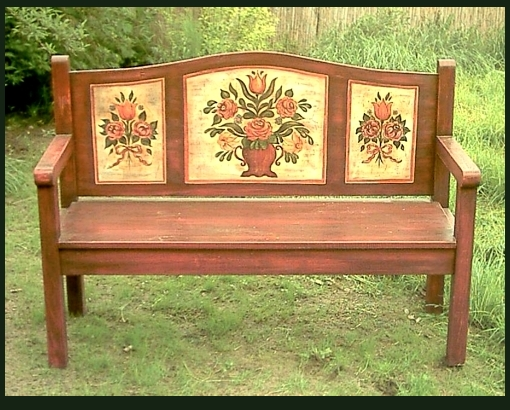

Virágmintás kerti pad

×

Kizárólag kézzel készített, vadonatúj antikolt fenyőbútor,
virgámintás festéssel. Kinti és benti használatra is.
Akár étkező garnitúrára is kiegészíthető! Ha van régi bútorod és szeretnél ilyet, az is megoldható.

Méretei:
Szélesség:50cm,
Hosszúság: 141cm,
Mélysége:52cm;
Legmagasabb pontján a magasság: 60cm
Ülés magasság: 45 cm

×